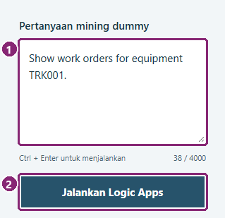
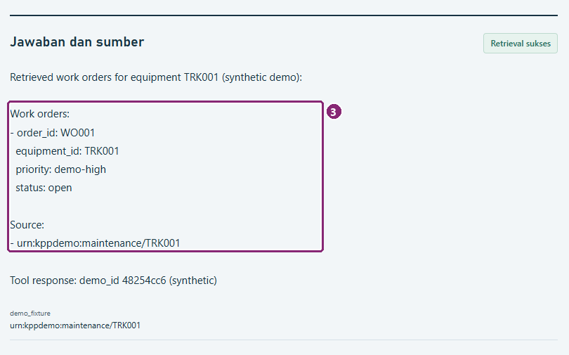

UI adalah pintu masuk, bukan workflow
- Browser lokalUji pertanyaan sintetisPOST ke
/ui/runs - Python gatewayToken Azure CLI tetap di backendPOST ke trigger
- Logic AppsMenjalankan action dan memanggil FoundryKembalikan respons dan ID run
- Gateway dan browserGateway baca status Azure; UI tampilkan hasil dan trace
Pilih cara mencoba sesuai aksesmu
Sandbox klien: gunakan setup workflow, lalu uji trigger dengan OAuth. UI historis mengunci resource dan manifest demo asal; menyalin profil publik tidak mengalihkan UI ini. Kuasai langkahnya dari screenshot di bawah tanpa memakai resource asal.
Operator demo: mulai UI di lingkungan yang memang disetujui
Butuh instalasi baseline, login Azure CLI, manifest lokal yang valid, izin trigger dan Run history, serta workflow berstatus Enabled dengan definisi yang cocok. Gunakan port loopback 8766.
.\.venv\Scripts\python.exe -X utf8 -m spikes.logicapps_ui --port 8766Di terminal lain, Invoke-RestMethod 'http://127.0.0.1:8766/health' seharusnya melaporkan local-logicapps-ui. Buka http://127.0.0.1:8766/ di browser. Health hanya memeriksa startup, bukan akses ke layanan data.
Praktik: jalankan contoh Maintenance MCP


- Di kotak Pertanyaan mining dummy, masukkan
Show work orders for equipment TRK001.Pilihan Maintenance MCP juga bisa mengisi contoh tanpa memicu run. - Tekan Jalankan Logic Apps sekali jika identitas dan sandbox sudah siap. Pada layanan asli, langkah ini memanggil Azure dan Foundry; pemakaian bisa berbiaya.
- Di Jawaban dan sumber, cari
WO001,TRK001, dan sumber maintenance. Catat native run ID dari trace untuk membuka run yang sama di Azure.


Empat indikator, empat arti
- HTTP 200 dari UI lokal
- Stream lokal diterima; job cloud masih bisa gagal.
- Action berstatus Succeeded
- Action selesai di Azure. Cabang lain boleh Skipped.
- HTTP 200 dari Logic Apps
- Workflow mengembalikan respons bisnis; belum tentu retrieval.
Result.status, fakta, dan sources- Untuk MCP01, cek
success,WO001,TRK001, danurn:kppdemo:maintenance/TRK001.
Trace UI dan Azure tidak cocok?
Cek Run ID, native evidence dan trace, lalu buka Run history pada workflow yang sama. Lihat apakah action salah cabang, masih berjalan, atau ditolak. Jika UI menolak definisi, cocokkan snapshot lokal dengan deployment yang disetujui; jangan menonaktifkan pemeriksaan.
Matikan UI, bukan resource Azure
Tunggu run selesai. Dari terminal lain, lakukan shutdown layanan demo lokal:
.\.venv\Scripts\python.exe -X utf8 -m spikes.logicapps_ui --port 8766 --stopJika masih ada run aktif, tunggu lalu ulangi. Menutup browser saja tidak menghentikan server. Resource dan biaya cloud perlu ditangani terpisah oleh pemilik sandbox.